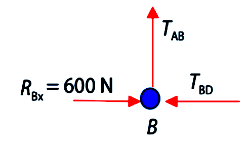

Método de los nudos
Cuando una estructura articulada es isostática, puede analizarse por medio del método de los nudos. Al estar la estructura en equilibrio, supondremos en equilibrio todas sus barras y nudos, y obtendremos ecuaciones de equilibrio estático para cada barra y cada nudo.
Para utilizar este método seguimos los siguientes pasos:
- Calculamos las reacciones en los apoyos mediante las ecuaciones de equilibrio de toda la estructura.
- Obtenemos la ecuación de equilibrio para cada nudo para calcular la fuerza que ejerce cada barra sobre el nudo.
- La fuerza que ejerce el nudo sobre la barra será igual y de sentido contrario.
- Con esto sabremos si las fuerzas son de tracción o de compresión.
Ejemplo resueltoEn la figura se representa una estructura de barras donde A es un apoyo articulado y B es un apoyo libre.
Comprobamos la isostaticidad: Se trata de una estructura isostática exteriormente, ya que hay igual número de incógnitas (RAX, RAY, RBX) que de ecuaciones (\(\sum F_x = 0;\ \sum F_y = 0;\ \sum M = 0\)), y también es isostática interiormente, ya que el número de barras \( b = 5 = 2n-3 \) (siendo n el número de nudos: n = 4). Construimos el diagrama de fuerzas:
Calculamos el valor de las reacciones en los nudos A y B: \[\begin{align} \sum F_x &= 0 \Rightarrow R_{Ax} + R_{Bx} - 200 = 0 \\[4pt] \sum F_y &= 0 \Rightarrow R_{Ay} - 400 = 0 \Rightarrow R_{Ay} = 400\,\text{N} \\[4pt] \sum M_A &= 0 \Rightarrow R_{Bx}\cdot 1 - 200\cdot 1 - 400\cdot 1 = 0 \Rightarrow R_{Bx} = 600\,\text{N} \Rightarrow R_{Ax} = -400\,\text{N} \end{align}\] Las tensiones de cada barra, calculadas por el método de los nudos, serán: Nudo B\[\begin{align} \sum F_x &= 0 \Rightarrow R_{Bx} - T_{BD} = 0 \Rightarrow T_{BD} = 600\,\text{N}\ (\text{compresión}) \\[6pt] \sum F_y &= 0 \Rightarrow T_{AB} = 0\,\text{N} \end{align}\] Nudo C
Nudo D
\[ \sum F_y = 0 \Rightarrow T_{AD}\cos\theta - T_{CD} = 0 \Rightarrow T_{AD} = \frac{T_{CD}}{\cos\theta} = \frac{400}{\cos 45^\circ} = 565{,}68\,\text{N}\ (\text{tracción}) \] |


 \[\begin{align} \sum F_x &= 0 \Rightarrow T_{AC} = 0\,\text{N} \\[6pt] \sum F_y &= 0 \Rightarrow -F_C + T_{CD} = 0 \Rightarrow T_{CD} = 400\,\text{N}\ (\text{compresión}) \end{align}\]
\[\begin{align} \sum F_x &= 0 \Rightarrow T_{AC} = 0\,\text{N} \\[6pt] \sum F_y &= 0 \Rightarrow -F_C + T_{CD} = 0 \Rightarrow T_{CD} = 400\,\text{N}\ (\text{compresión}) \end{align}\]